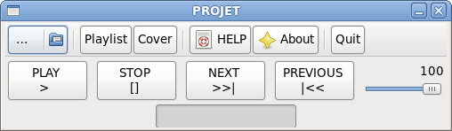

Le Projet
Notre projet est un logiciel de lecture audio nommé PROJET (Programme Radiophonique Oriente Jouant Énormément sur les Tonalités). Dans la suite de ce rapport, nous présenterons de façon détaillée toutes les parties que nous avons étudié. Le projet aura été développé sous et pour Fédora, en C et en Caml.
Les lecteurs audio sont des outils très répandus aujourd'hui, notamment grâce à la démocratisation de la dématérialisation de la musique. Étant des amateurs de musique en tout genre, notre envie s'est donc tout naturellement porté sur la réalisation de notre propre lecteur. Nous l'avons voulu simple, pratique, ergonomique, léger.
Ce programme est un lecteur audio codé dans la majeure partie en C et en Ocaml. Le projet est accompagné d'un site web qui décrit tout au long de l'année l'avancement du projet. Il a été mis à jour régulièrement après chaque évolution notable. Ce projet aura été particulièrement diffcile à réaliser au niveau de la programmation : en effet, ce projet a demandé des notions particulièrement avancées dans le domaine du cryptage des fichiers audio. Par exemple, il a fallu être capable de distinguer les en-tête de fichier de type .mp3, ou tout simplement être capable de lire un son, montrer son avancement dans le temps, afficher plusieurs informations sur la musique en cours. C'est pourquoi nous avons commencé ce projet en progressant étape par étape.

Les premices du projet
Le groupe TeGaSz est un groupe de projet formé en 2012 par trois étudiants d'EPITA passionnés, dans le but de réaliser pour la fin de l'année un travail de programmation inédit.Les lecteurs audio sont des outils très répandus aujourd'hui, notamment grâce à la démocratisation de la dématérialisation de la musique. Étant des amateurs de musique en tout genre, notre envie s'est donc tout naturellement porté sur la réalisation de notre propre lecteur. Nous l'avons voulu simple, pratique, ergonomique, léger.
Ce programme est un lecteur audio codé dans la majeure partie en C et en Ocaml. Le projet est accompagné d'un site web qui décrit tout au long de l'année l'avancement du projet. Il a été mis à jour régulièrement après chaque évolution notable. Ce projet aura été particulièrement diffcile à réaliser au niveau de la programmation : en effet, ce projet a demandé des notions particulièrement avancées dans le domaine du cryptage des fichiers audio. Par exemple, il a fallu être capable de distinguer les en-tête de fichier de type .mp3, ou tout simplement être capable de lire un son, montrer son avancement dans le temps, afficher plusieurs informations sur la musique en cours. C'est pourquoi nous avons commencé ce projet en progressant étape par étape.
Présentation détaillée
L'interface inclue toutes les fonctions que l'on peut attendre d'un lecteur audio basique. Nous pouvons sélectionner le fichier charger, un bouton play permettant de lancer le fichier sélectionné, un bouton stop pour arrêter la lecture, et une barre de volume pour régler l'intensité du son. Il y a aussi deux boutons pour changer de piste, bien que ils ne soient pas encore fonctionnels.Une des particularité du bouton de lecture est qu'il permet aussi de mettre en pause la lecture. Une fois presse, il reste enfonce et ainsi l'utilisateur sait que la piste est lue. S'il est de nouveau clique, il ressort et la lecture est mise en pause et peut être reprise au même point.
La sélection du volume se fait par une barre coulissante, avec une indication numérique du volume actuel pour une plus grande précision. A la base, le volume est indique avec une décimale, ainsi pour raison esthétique, nous avons préféré ne garder que les entiers.
Autre détail d'ordre visuel, lors de la lecture du son, le nom du fichier est ajoute dans la barre de titre de la fenêtre. Ainsi, sans même avoir l'interface sous les yeux, il est possible de savoir quel son est joue.
Petite fonctionnalité pratique en cas de panne de pile de la souris, l'interface est entièrement utilisable au clavier via les touches de directions et la touche de tabulation.
Petite fonctionnalité pratique en cas de panne de pile de la souris, l'interface est entièrement utilisable au clavier via les touches de directions et la touche de tabulation.
Seule la pochette de l'album en cours est affichee. Nous récupérons les données incluses dans les métas données du fichier audio.
Si ce dernier contient le nom d'un album, nous envoyons ce dernier au code en Caml. Nous recherchons ensuite le nom de l'album en dans le dossier. L'image trouvée, celle ci s'affiche dans la page.
Derniere precision, la barre de defilement affichee indique la duree de la lecture en cours.